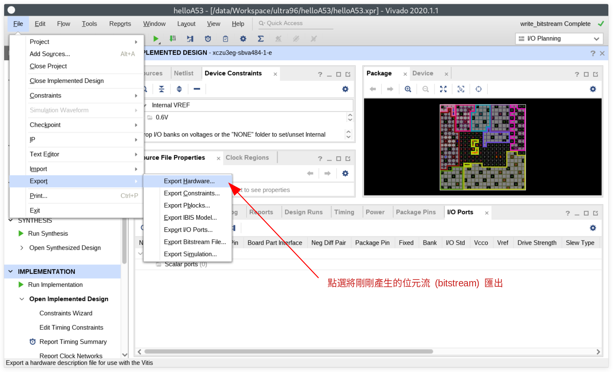
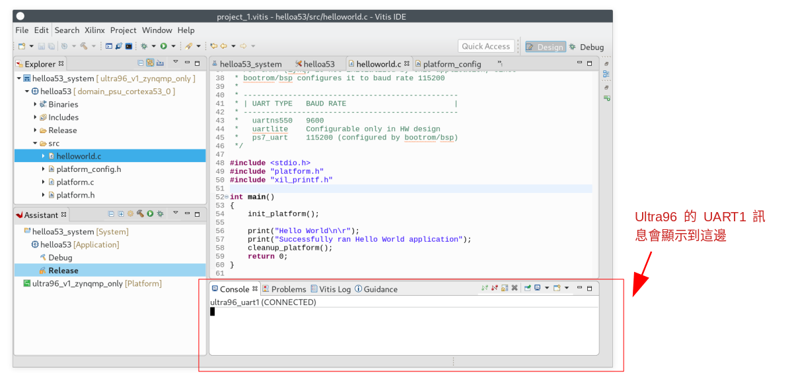

在 Ultra96 開發紀錄: 硬體認識 一文中我們了解了 Ultra96v1 這塊開發板的一些資訊後，就讓我們來開始第一個專案吧。
由於 Ultra96 拉出來的低速擴充腳位(Low Speed Expansion Connector)基本上是以 2.0mm 的寬度為主，並且電壓為 1.8V ，不透過擴充板之類的會讓我們不好使用，因此這邊文章將採用傳統的方式，透過 Uart1 來將我們的測試訊息輸出。
(本文以 Vivado 2020.1 進行開發，請注意文中開發板以 Ultra96v1 為主，但可套用到 Ultra96v2 上。)
使用設備
要完成本篇文章所描述的部份，你需要以下幾種器材:
- Ultra96 (rev1 或是 rev2 皆可)
- Ultra96 USB-to-JTAG/UART Pod
開發目標
由於這是第一個 Ultra96 的專案，當然是從 Hello World 來開始啦~ 我們將透過 Vivado 建立基本的 Ultra96 的系統，並透過 Vitis 來建立一個會透過 UART1 顯示 Hello World 的簡單程式，你將可以透過 Ultra96 USB-to-JTAG/UART Pod 這邊讀取到顯示的訊息。
建立專案
首先讓我們打開 Vivado 吧，請確定在進行這一步之前，有先參照 Ultra96 開發紀錄: 讓 Vivado 有 Ultra96 的設定檔 一文的說明，讓我們在建立專案的時候可以找到 ultra96 這塊開發板。
啟動了 Vivado 後，點選 Create New Project 來建立我們的新專案
接下來指定好專案路徑和名稱
選擇 RTL Project ，由於我們這次不會撰寫硬體描述語言，因此也請勾選 Do not specify sources at this time
根據你是用 Ultra96v1 或是 Ultra96v2 來選擇你的板子，如果這邊看不到你要找的開發板的話，請再去看一下 Ultra96 開發紀錄: 讓 Vivado 有 Ultra96 的設定檔 一文的說明。

請注意到，截至本文撰寫時間 (2020/09/05)，這邊透過 Install/Update Board 仍舊不會看到 Ultra96v2 的身影，因此如果你是 rev2 的開發板的話，請記得安裝對應的 bd 檔 (Board definition)。
都確定沒問題後，我們就可以來開始我們的專案啦~
建立 Block Design
由於我們的設計需要用到 Xilinx 一些現成的 IP 的時候，就會需要透過 Block Design 來建立我們的電路設計。
首先點選 IP Integrator -> Create Block Design
接著點選 OK 建立我們的 Block Design
點選 Add IP 按鈕去增加我們需要的 IP
我們首先尋找 Zynq UltraScale+ MPSoC 並將它加入到我們的 Block Design ，並點選 Run BLock Automation 來對該 IP 做一些設定
進入到 Run BLock Automation 的設定頁面後，確認 zynq_ultra_ps_e_0 有被勾選到，並且 Apply Board Preset 有被設定起來。
點選 OK 完成設定。
接下來，將 pl_clk0 連接到 maxihpm0_fpd_aclk 以及 maxihpm1_fpd_aclk ， 這是為了讓處理器系統 (Processing System, PS) 到可程式邏輯區 (Programming Logic, PL) 之間資料傳送的界面可以順利運作。
(如果你堅持不想將他們接在一起的話，就要知道怎樣關閉 PS to PL AXI Interface, 不然這邊會編譯失敗呦~)
好了後，點選 Validate Design 按鈕來確認設計沒問題
沒問題的話，就讓我們來結束 Block Design 的工作吧
產生 HDL Wrapper
接下來我們要將剛剛用 Block Design 建立的電路變成 verilog 程式碼，因此會需要進行產生 HDL Wrapper 這個步驟。
對你的 Block Design 檔案點選右鍵，選擇 Create HDL Wrapper ，它會根據你專案設定的語言 (VHDL 或是 Verilog) 來產生相對的 HDL 程式碼。
由於這次我們不需要對產出來的東西進行修改，因此選 Let Vivado manage wrapper and auto-update 即可
好了後，假設你的 Block Design 檔案叫做 design_1.bd ，那就會產生 design_1_wrapper.v 或是 design_1_wrapper.vhdl 這樣的檔案。
產生位元流 (bitstream)
前面的處理都好了後，接下來點選 Program and Debug -> Generate Bitstream 去讓 Viavado 將這個專案產生出 位元流 (bitstream) ，Zynq UltraScale+ 會在開機的時候根據 bitstream 的資訊對 FPGA 進行設定。
這個產生的過程視你的電腦強度如何而決定花多少時間，總之先來泡杯茶吧~
當 bitstream 完成後，我們準備執行 Xilinx SDK 來透過寫 C 語言專案來讓 Cortex-A53 可以透過 UART1 輸出訊息，因此要先將剛剛產生的硬體資訊輸出給 Xilinx SDK 去。
點選 File -> Export -> Export Hardware

這邊我們選擇 Fixed
選擇 Include bitstream
確認沒問題後，點選 Finish
以我這邊為例，會產生一個名為 design_1_wrapper.xsa 的檔案在 /data/Workspace/ultra96/helloA53 ，這個 XSA (Xilinx Support Archive) 檔案是等等要給 Vitis 建立我們需要的平台使用。
確認 OK 後，執行 Vitis IDE
Vitis IDE
啟動 Vitis IDE 後，點選 File -> New -> Application Project 去建立新的專案
第一次建立新專案的時候會看到如下的視窗，簡單來說我們剛剛建立的 XSA (Xilinx Support Archive) 檔案，是一個很類似專案的檔案。
XSA (Xilinx SUpport Archive) 包含了關於這個硬體、IP、記憶體位址設定等資訊，我們可以用它建立我們想要的平台後，重複利用這個平台就可以建立新的 App，就讓我們開始來建立我們的平台吧，點選 Next
由於這是我們第一個專案，還未有任何已經建立的平台 (Platform) ，因此我們要來建立它，點選 Browse 選擇我們剛剛產生的 design_1_wrapper.xsa 。
另外注意到由於這個建立出來的平台 (Platform) 是可以重複利用的，因此建議命名一個清楚的名字，這邊我將其命名為 ultra96_v1_zynqmp_only
在這邊，我將我們要建立的專案命名為 helloa53 ，並指定 psu_cortexa53_0 為這個程式要執行的 CPU。
還記得一開始建立新專案時候 Vitis 告訴我們 Processor、XSA、Domain、App 的關聯嘛? 現在我們就要來建立我們的 Domain 啦。
這邊選擇 standalone 的作業系統，也就是跑 Baremetal 啦 ~
我們利用 Xilinx 建立好的 Hello World 樣板來作為我們的專案，好了後點選 Finish
App
建立好專案後，會看到這樣的視窗，由於 Ultra96 預設從 JTAG-UART 轉板得到的 UART 訊號是 UART1 ，因此我們需要透過 Navigate to BSP Settings 去做些額外的設定。
在我們的 Domain 這邊 (domain_psu_cortexa53_0)，點選 Modify BSP Settings
在這邊，將 stdin 和 stdout 都改成用 psu_uart_1 進行輸出，這樣我們使用 printf() 的時候，訊息就會丟到 UART1 去囉!

由於我們已經透過 Xilinx 的樣板程式建立好我們的專案了，要偷看程式碼的話它就長這樣，這邊就不再對其進行更改。
這樣，程式已經完成囉，先來進行編譯一下
設定 JTAG 下載
為了透過 Micro USB 連接到 Ultra96 上的 JTAG 來進行下載，我們需要對 Ultra96 上的 SW2 要進行一些調整，變成下面這樣。
SW2 位置

BOOT MODE : JTAG

這樣子就可以透過 Micro USB 走 JTAG 下載的路線，將程式下載下去
下載到開發板 (FPGA)
由於我們到目前為止還沒有將編譯好的位元流 (bitstream) 下載到我們的 Ultra96 去，因此先來下載吧。
點選 Xilinx -> Program FPGA 進入到下載頁面
點選 Program 將我們的位元流 (bitstream) 下載下去
下載好了後，由於我們的程式還沒燒到 Cortex-A53 上，因此要進行下載 ELF 的動作
連接 UART
我們可以在 Vitis IDE 上面直接連接 UART，由於這份 Hello World 程式只會輸出訊息一次，因此我們需要先連接上 UART 在執行程式，這樣才可以順利看到訊息。
點選 Command Shell Console 來讓 Vitis IDE 可以顯示 UART 訊息
接下來，建立新的連線，並設定好 UART 為 115200, 8N1 後，指定好你電腦上的 UART 設備 (圖中以 /dev/ttyUSB1 為例)
完成後，就可以在 IDE 下面看到當前 UART Console 訊息的狀況。

下載到開發板 (ELF)
由於我們沒有修改程式，因此直接跑 Release build 就好，對 Release 點選右鍵，選擇 Run -> Launch on Hardware (Single Application Debug) 這樣 IDE 就會自動幫我們把程式下載下去囉

結果
如果一切都運作正常，你應該會看到 UART Console 裡面顯示 Hello World 的訊息，代表我們的程式至少有跑成功！